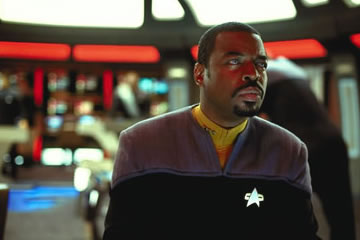
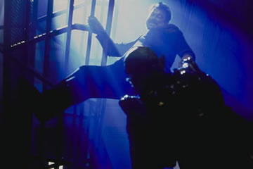
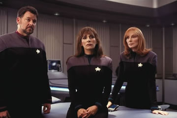
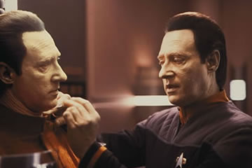
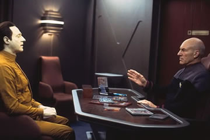
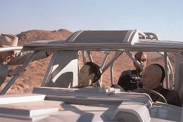
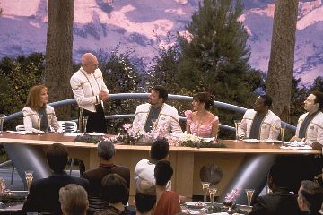

|

Publicado como artigo de
Especiais em janeiro de 2003


|

|
Ronald D. Moore é um
sujeito muito, muito esperto. 
“Os filmes (de Jornada) têm de voltar a ser sobre
assuntos significantes. Tem de haver uma razão para se produzir
estes filmes. Quando fizeram ”Jornada nas Estrelas – O
Filme”, foi o primeiro. Isso por si só já é razão para
produzi-lo. O segundo decidiu tomar um rumo diferente. Ele aposta.
Não apenas mostra que os atores estão envelhecendo, mas que os
personagens também estão”. Mataram Spock. No terceiro, destruíram
a Enterprise, tiraram a nave deles. Eles estavam assumindo riscos,
e não apenas fazendo um episódio com orçamento maior. Agora,
parece que a série de filmes é apenas isso. Em “Generations”,
nós destruímos a Enterprise, e a série poderia ter tomado um
rumo totalmente novo então. Nós acabamos decidindo não seguir
este caminho, porque sentíamos que precisávamos de uma sólida
aventura. Naquele tempo, acreditávamos nisso. É difícil dizer
que foi uma decisão errada. Acho que precisávamos dar a eles uma
nave, provar que a franquia de filmes é viável, que pode ser
divertido, que teremos uma audiência conosco, e funcionou. Mas a
escolha de “Insurreição” é difícil de entender.
Agora, é só mais um episódio. “Primeiro Contato” é
só mais um episódio, um show que podíamos ter feito durante a série,
mas faltava dinheiro. Nada naquele filme o impedia de ser um episódio
de A Nova Geração. É só uma grande viagem no tempo com
os Borgs como vilões e Picard encarando os demônios de seu
passado. É um bom episódio; é um grande episódio e funcionou
bem na tela grande, graças a Deus. “Insurreição” é apenas
um episódio. Jornada II, III e IV não são
apenas episódios, Mesmo o primeiro filme mostra Kirk como um
almirante que desistira de sua nave. Spock não está mais lá,
McCoy deixou uma barba crescer, e o tempo passou. Mesmo aquele
filme não é apenas um episódio. Você está assistindo algo que
não poderia ter sido feito na série. Agora, há apenas esta
falta de interesse em se fazer algo que realmente desafie as
expectativas da audiência”. 
Pois é. Palavras proféticas. A crítica realmente considerou o
filme como “apenas mais um episódio”, e a partir daí
criou-se a pior bilheteria da história da franquia. O epitáfio
foi escrito. Assim, onde era mais importante que “Nêmesis” fosse bem sucedido, ele falha miseravelmente. O roteiro brinca com a audiência, não a desafia. 
Romulanos, Remans e
Shinzon Alguém pode seriamente me explicar a origem dos Remans? De tudo o que conheço de Jornada, sei que os Romulanos são, em origem, Vulcanos que deixaram o planeta por não concordarem com a doutrina lógica de Surak, e se estabeleceram em Romulus. E os Remans, como se originaram? Afinal, eles possuem orelhas pontudas, então há um vínculo genético com os Romulanos. Mas os Romulanos não se desenvolveram neste planeta, eles o colonizaram. Então, como surgiram os Remans? Nada na natureza justifica que uma raça inteira surja, seja pela escuridão do planeta Reman, seja por deformação genética provocada por radiação. Aqui, de novo, vale o comentário que o roteiro simplesmente exigia elementos pré-fabricados, no caso, uma raça que pudesse render ao filme um Oscar de maquiagem. Só isso.  Quanto a Shinzon... é uma oportunidade perdida. Tom Hardy faz o que pode com o roteiro, mas Shinzon é raso como um pires. Como clone de Picard, que foi forçado a uma vida de escravidão, ele deveria ao mesmo tempo ser extremamente curioso sobre a vida de Picard, e ao mesmo tempo odiá-lo. Mas Picard não é odiado, é apenas fonte de sangue. É o único interesse de Shinzon, curar-se. Em momento algum se percebe um conflito interno em Shinzon, sobre se deve destruir a raça responsável por sua criação ou se quer conhecê-los melhor. Afinal, ele é o vilão do filme, vamos fazê-lo ser mal e pronto. Aliás, Hardy merece alguns créditos. A roupa de Shinzon, que aparentemente foi criada por Joãozinho Trinta (parece MESMO uma fantasia de carnaval) era terrivelmente incômoda. Pode-se notar que o ator não conseguia deixar os braços junto ao corpo por causa da roupa; como as axilas são uma parte sensível da anatomia humana, atuar vestido desta forma deve ter sido doloroso! Picard, também, não se demonstra tão confuso ou interessado por seu clone. Stewart realmente estava no piloto automático na interpretação, ou vestiu mesmo a camisa “die hard” que Picard demonstra nesse filme. Afinal, ele sozinho consegue dizimar quase todos os Remans a bordo da Scimitar. Outra oportunidade perdida aqui. A batalha entre Picard e Shinzon podia ter sido muito mais dramática, em termos dos conflitos internos dos personagens. Shinzon tentava matar aquele que era o único laço de família que teve em toda a sua vida. Picard tentava matar um homem que também possuía o gene Picard – o faria com que ele deixasse de ser o “último Picard”. São dois homens sem família e sem laços, que se encontram e resolvem se matar apenas porque o filme precisa ter ação. 
A Nebulosa de Mutara... ou o que quer que seja A Scimitar... é um desafio de lógica que seria bem aceito pelo Sr. Spock. Primeiro, se a nave possui tal poder destrutivo, porque precisa ser tão grande? Segundo, como é que os Remans a construíram? Afinal, eles não são escravos que trabalham nas minas de dilítio? Como adquiriram conhecimentos em engenharia que possibilitassem não apenas construir a nave, mas também as instalações necessárias à sua confecção? Difícil de entender, a não ser pelo fato de que uma nave poderosa era necessária para uma grande batalha espacial. O que nos leva ao suposto clímax do filme, a suposta homenagem a “Jornada nas Estrelas 2” – a batalha na nebulosa. Por esta, Picard e sua tripulação deviam ser exonerados da Frota. Como é que eles entram em um setor do espaço onde as comunicações não são possíveis sem perceber? O que a tripulação faz enquanto a nave viaja? Dorme? E os sensores de longo alcance, deixaram de existir? É aí que toda a batalha perdeu o interesse para mim. Kirk levou Khan para a nebulosa de Mutara por lhe trazer uma vantagem estratégica. Picard caiu como um coelho na armadilha de Shinzon. Nosso bravo capitão, herói de ação e duro de matar, afinal, parece estar ficando senil.  A seqüência de batalha tem dois grandes defeitos, ao meu ver. O primeiro é um total desrespeito às leis da física. A Enterprise NUNCA, no espaço, conseguiria danificar de tal modo a Scimitar, e isso ganhando apenas alguns arranhões. A Scimitar NUNCA conseguiria se livrar da Enterprise apenas revertendo os motores. Um tiro de torpedo na ponte de comando destruiria A PONTE TODA, e não apenas a tela principal. Mesmo que só a tela fosse destruída, a descompressão resultante mataria a todos instantaneamente. É uma cena de impacto? Sim, mas Berman deveria lembrar que os fãs da série normalmente possuem curso superior. O segundo defeito é a participação dos Romulanos no episódio. Eles SABIAM qual era o poder de fogo da Scimitar, e mandaram APENAS 2 naves pequenas para ajudar a Enterprise. Serviu para algum fim? Aparentemente, nenhum.
Captain, I believe
that we’ve lost some Data  O dispositivo portátil
de transporte é uma grande piada. Antigamente, criava-se
dispositivos totalmente plausíveis. Podiam fisicamente inviáveis,
mas eram plausíveis. Por que este novo dispositivo é implausível?
Simplesmente porque ele se desmaterializa junto com o
transportado. Alguém tem de me explicar como tal dispositivo
consegue, desmaterializado, promover sua própria rematerialização...
isso sem contar a do transportado. E Data podia perfeitamente ter
levado uma unidade adicional com ele. Spock morreu em
“Jornada nas Estrelas II” porque não havia outra
alternativa. Data morreu, simplesmente, porque foi burro. E porque
Brent Spiner queria que o personagem morresse, é claro. |